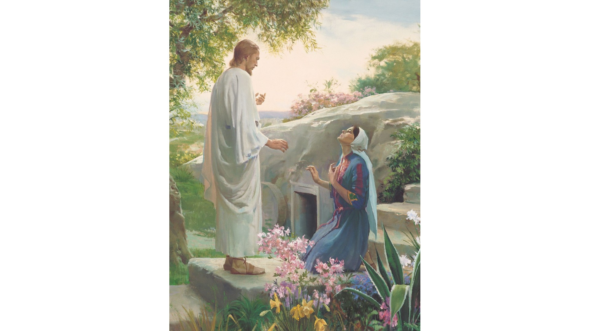
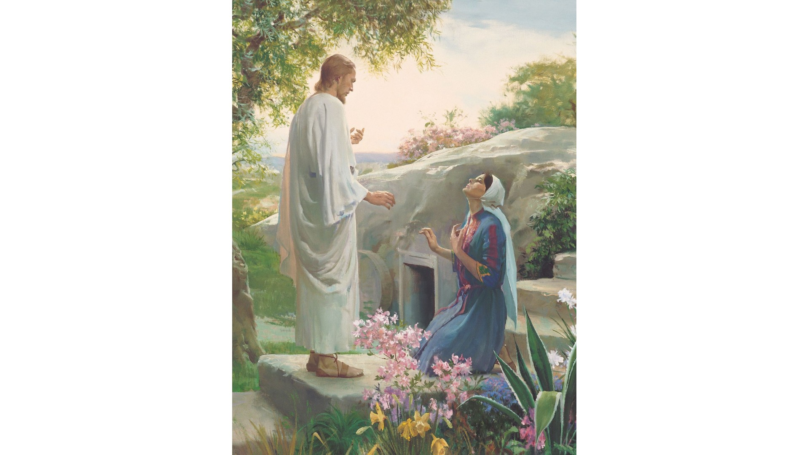

Yokota Military Ward Bulletin
The Church of Jesus Christ of Latter-day Saints
6 Sept 2020 - Group 2 (Last Names J-Z)
 

Sacrament Meeting Theme: Fast and Testimony Meeting
"There are times when the Lord reveals to us things that are intended only for us. Nevertheless, in many, many cases He entrusts a testimony of the truth to those who will share it with others. This has been the case with every prophet since the days of Adam. Even more, the Lord expects the members of His Church to 'open [their mouths] at all times, declaring [His] gospel with the sound of rejoicing.'"
"Waiting on the Road to Damascus" April 2011 General Conference, Dieter F. Uchtdorf.
This talk has also been made into an Inspirational Message, though this message is focused on an earlier portion of the talk. The portion of the talk referenced has also been directly shared as a Doctrine and Covenants study video, titled Testimony of Truth.
Sacrament Meeting Program
Presiding: Bishop Nate Larson
Conducting: Bishop Nate Larson
Pianist: by Sister Jackson
Opening Hymn: #89
The Lord is my Light
Invocation: by Sister Christina Parks
Ward and Stake Business
Sacrament Hymn: #195
How Great the Wisdom and the Love
Sacrament Administered by the YM Who Hold the Aaronic Priesthood
Testimony Meeting
Closing Hymn: #97
Lead Kindly Light
Benediction: by Sister Jessica Larson
Announcements
Please help us welcome Elder Zeb Daw home from his mission in Alabama, Birmingham during this unusual time! We would love to have posters, banners, notes (or anything else you can think of) from ward members when he arrives on 16 September. If you would like to participate, please drop off or request a pickup anytime before Wednesday, September 16th from the Daw Family. Thank You!
Nationwide Devotional: September 13 at 10:00 - 11:30am JST - We invite everyone to Japan's nationwide virtual devotional with President Dallin H. Oaks, his wife, Sister Oaks, Elder Gerrit. W. Gong, and his wife, Sister Gong.
Face to Face Event: September 14 at 9am JST (for Young Adults) with Elder & Sister Rasband on the Restoration.
Stake Missionary Preparation Classes: These are the 1st and 5th Sundays of every month. Full time missionaries teach on Fast Sundays, guest speakers from the stake will teach on 5th Sundays. See Stake Calendar for details.
First Presidency Announces New Online System for Temple Prayer Rolls
For the most up-to-date information on ward activities, sign-in to the ward calendar at churchofjesuschrist.org and sync the calendar with your phone!
Official Church letters and announcements can be found at the Official Communication Library of the Church of Jesus Christ of Latter-day Saints. A login is required to access this content.
Sunday School and Auxiliaries
Today:
Information regarding this week's sunday school lesson is currently pending.
Next Week:
Information regarding next week's sunday school lesson is currently pending.
Come Follow Me Review: "Glad Tidings of Great Joy"
For this past week, we finished our studies of the Book of Helaman, chapters 13-16 in the Book of Mormon.
Come Follow Me Preview: "Lift Up Your Head and Be of Good Cheer"
For this upcoming week, we will begin the Third Book of Nephi, studying chapters 1-7 in the Book of Mormon.
As you study on your own and with your families, think about how the principles found in these chapters build on and reinforce other things you have been learning in the scriptures.
Bishop's Corner
Ward Goals
This corner is currently undergoing renovations. Please check back soon.
Message from the Bishop
COME AS YOU ARE 🙂
We have a lot of new people in the ward, and there are a lot of new faces. I just wanted to take the time to invite everyone that attends a zoom meeting to turn on your camera. When I thought about why i have left my camera off in the past, it’s almost always because i was not dressed up so I didn’t want people to see me. Now i want to be very clear—we are a come as you are, “no judgment zone” ward. It does not matter if you are dressed up or are wearing sweat pants or basketball shorts, we invite all to be seen. We want to see your smiling faces more than we care about what you look like. I would only ask that you have some clothes on, we don’t want anyone appearing on camera in their skimpies’...I’m looking at you Bro Brown 😉. So come as you are, turn on your camera, and lets get to know everyone. This is Christ’s church, after all, and we just want to love and see everyone.
Youth Corner
Primary Announcements
Due to the COVID-19 Pandemic, primary is not currently meeting after church in order to uphold and maintain public health. For the latest updates from the Church regarding the impacts of COVID-19, please read their newsroom article found HERE
Young Men Announcements
Young Men Service Activity: September 9 at 7:00pm the Young Men are meeting at the thrift shop on the west side for a service activity by quorums.
Young Women Announcements
Sister Cordon Issues Second Young Women 150 Challenge: Share the Impact of Your Leaders. Post the impact of your young women leaders on social media using #strivetobe
Missionary Corner
In the Field
Elder Indiana Brown - England London Mission
Elder Zeb Daw - Alabama Birmingham Mission
Sister Aspen Fisher - Utah Ogden Mission
Support our missionaries in the field! Letters and care packages are as appreciated by our missionaries as they are by our deployed family members. Include them in your prayers, and ask Heavenly Father to help you reach out to those around you and invite them to come unto Christ.
Converts and Baptisms
Moneer and Monar Al Halabi are the newest members of our ward to join the Church. Reach out to them and introduce yourself, if you havent already, and help them feel welcome and loved.
Message from the Missionaries
Our missionaries are currently searching for people to teach using online tools such as facbook messenger and zoom. Please reach out if you would like to learn more about the Gospel of Jesus Christ or if you have a friend you have spoken with about meeting with the missionaries.
Welcome New Families
These Families Have Just Moved-In; Be Sure to Reach Out, Introduce Yourselves, and Help Them Feel Welcome
2 July 2020 - Badger Family: Eric & Cindy Badger with Four Children
13 July 2020 - Brown Family: Robert & Katherine Brown with Six Children
14 July 2020 - Daw Family: Tyson & Becky Daw with Four Children
21 July 2020 - Farnsworth Family: Strider & Jana Farnsworth with Five Children
29 July 2020 - Wise Family: Joseph & Janae Wise with Six Children
20 Aug 2020 - Young Family: Eric & Joy Young with Three Children
Contact Us!
Information here is not definitive or officially endorsed by the Church. For the best source of information, visit the Church of Jesus Christ of Latter-day Saint's official website at churchofjesuschrist.org
To join the disscusion on facebook, visit the Yokota Ward Connection facebook group.
If you would like to add additional information to the Ward Bulletin, send all info as soon as possible to Harrison Merrill via email with the subject line, Ward Bulletin, at hwalkermerrill@gmail.com All information must be in by 9:00pm on the Friday before publication.
Leadership Contacts
- CLICK HERE to Show/Hide contact information for some of the current Ward and Stake Leadership:
Church Programs
Due to the COVID-19 Pandemic, many church programs are currently suspended or are being held online in order to uphold and maintain public health. For the latest updates from the Church regarding the impacts of COVID-19, please read their COVID-19 Newsroom Article